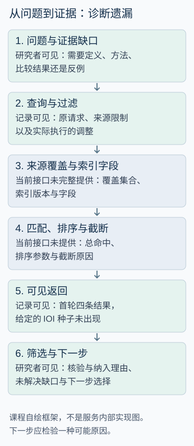

本讲章节导航
第三讲｜多路文献发现与检索决策¶
让检索结果改变证据路线¶
检索开始前先写清当前缺口：需要一个定义、某种方法的原始描述，还是一个效果主张的对照证据。关键词只是取得材料的入口，不能单凭命中很多或排序靠前判断问题已经解决。
独立构造例：你想知道某缓存策略是否改善突发负载，却只检索到稳态吞吐量比较。新材料并非无用，它帮助发现“负载条件”仍是缺口。下一次查询可以补这个条件，也可以从可信种子沿引文追踪；保留实际查询和筛选理由。若已到资源上限，则记录未覆盖范围，避免把停止搜索写成文献不存在。
导读与学习目标¶
研究者已经能够把“为这个问题找相关研究”交给 AI。接下来真正影响研究质量的，是任务如何交代、Agent 实际查了什么、哪些结果值得继续，以及新材料怎样改变问题。本课训练你组织这段过程，并解释自己的取舍。
学完本课，你应能依据当前缺口选择检索路线，让 AI 执行实际检索，保存可追溯记录；根据返回结果调整一次策略；核对两条真实来源的身份及各自一条拟用主张，至少形成一条完成核验的候选；说明继续检索或暂时停止的理由。
上游输入是第 2 课的公开问题初稿、工具环境与来源权限。下游输出是 notes/literature-search.md，供第 4 课选择关键主张精读，也供第 6 课问题门检查选题依据。本课没有独立正式提交。
一、把研究问题拆成证据缺口¶
先区分定义、方法、效果、范围与替代解释等缺口。不同缺口需要不同来源：任务定义可从原文方法段取得，迁移主张需要新条件的检验，失效解释需要限制或反例。新材料可能改变问题本身；保存旧问题与修改理由。MI 的真实检索背景见项目检索材料。
先确定什么结果会有用¶
相关性取决于当前问题和用途。若缺口是“怎样实施干预”，方法定义和实现条件就是重要结果；若缺口是“能否迁移到新模板”，只复述原任务成功的论文仍不足。先用一句话写出需要的证据，再据此选择术语、来源和筛选标准。发现不同的问题表述或反例后，可以保留旧问题版本并修订缺口。
检索阶段先判断候选来源能补哪类缺口，L4 再检查具体论证。
二、把研究缺口交给 Agent¶
Agent 可以规划子任务、调用搜索、读返回、沿引用查找、合并去重，并提出下一轮动作。研究者需要给出公开问题、资源边界、可检查输出和停止条件。AI 也可以帮助拟定这些条件；学生最终须能解释它们是否适合自己的研究。
任务说明包括研究问题、给定种子及身份、当前缺口、来源范围、可检查产出和停止预算。不要把种子计为新检索发现。没有种子时可从公开起始池取得临时入口，标记给定身份。
路线应由实际返回决定。学生在已有预算内执行两条互补路线，记录真实请求、日期、返回、访问失败和处理；输出回写本人检索记录。完整提示与既有记录由任务页提供。
三、首轮结果怎样改变下一步¶
如果一个已知相关来源没有出现在返回列表中，可以确认它不在本次可见切片；要判断整个数据库是否收录，还需要数据库范围与索引证据。下一步可以改变查询、换入口或沿引文追踪，选择理由应对应当前缺口。完整历史查询见检索运行记录。
没有出现，可能在哪一层遗漏？¶

课程自绘诊断图；按当前通用搜索接口可见程度标注，不宣称知道该服务内部实现。各层是诊断位置，实际系统可能合并或交错执行。
问题被表达为查询后，只能在入口覆盖的材料中寻找候选。字段与过滤条件影响哪些候选可参与匹配，排序和返回上限又影响你实际看到什么。最后的筛选还可能排除本来相关的条目。因此，种子缺席至少有几种解释：入口未覆盖、所需字段未索引、表达或过滤不匹配、排序后未进入返回切片。
当接口只显示请求和少量返回，而不显示全库清单、总命中数或排序参数时，就无法据此选定唯一原因。可分别用完整题名定位、放宽一个过滤条件或换来源检查；每次调整应针对一种可能解释，并记录还不能排除什么。
路线怎样互补¶
| 路线 | 利用什么信息 | 适用缺口与切换信号 | 容易遗漏／需要核对 |
|---|---|---|---|
| 词法／字段 | 查询词与题名、摘要等字段的匹配 | 已知术语或准确题名；术语变化时扩词或换字段 | 同义表达、未索引字段；核对实际语法、来源范围和返回 |
| 语义 | 模型表示中的语义相似性，可能与词法混合 | 词面不同而问题关系接近；精确词查询反复漏掉已知相关项 | 相似不等于满足研究条件；核对服务机制、候选原文与独有结果 |
| 引文网络 | 种子与前驱／后续研究的引用关系 | 已有相关种子，需补方法来源或后续检验 | 无引用关系的研究、种子偏向；检查引用上下文与方向 |
| Agent 编排 | 对工具返回的反馈与路线选择 | 需要多步查找、恢复和去重 | 可能重复同一路线或过早收束；核对每次真实动作与理由 |
Agent 是组织检索的执行方式，可调用一种或多种检索机制。使用两家数据库的同义词查询，未必形成互补；沿同一种子追踪方法来源，则可能补到首轮词面查询没有发现的材料。OpenAlex、Semantic Scholar、arXiv 和搜索服务都可以替换，选用依据是任务与实际可用能力。
自然语言问题可以直接用于语义检索，例如：Which interventions recover indirect-object predictions across prompt templates?。它没有必须先拆成布尔式的前置步骤。服务若只提供关键词查询，就记录为词法或通用搜索；名称、自然语言输入和 AI 生成的回答都不能单独证明底层采用语义检索。没有提供的语料版本与相似度分数记N/A及原因；实际案例的已运行路线和未执行能力见检索案例。学生可以在自己可用且已核实的服务上使用语义路线。
用返回选择下一步¶
例如，某个原文入口被访问验证拦住，可以保留失败，再用完整题名定位另一合法入口；恢复后核对题名、作者和版本，不能把题名相同直接当作内容一致。这是说明恢复方法的短例，具体历史动作见项目记录。
比较路线贡献时，给定种子、实际新发现、未筛选返回分别计数。只追踪一个经过选择的分支，不能报告整个引文网络的召回率。
词法知识在诊断中使用¶
当你怀疑遗漏来自不同术语，可以比较 activation patching、path patching、interchange intervention。它们有联系，但方法和使用范围并不完全相同，应回原文核对。支持布尔语法的服务中，OR 常用于合并可替代表达，AND 用于结合概念条件，括号规定组合关系。指定 title 可能更精确，也可能漏掉仅在摘要出现的词。先确认目标接口的语法，再保存实际请求。
site:arxiv.org 是此次通用搜索的来源限制，不等于 arXiv 原生字段表达式。语义问题也可以配合年份或来源过滤，但过滤能力应逐项核实。改词后返回更多，需要继续检查新增内容是否解决研究缺口。
四、从文献身份到一条拟用主张¶
入口核验回答两个问题：找到的是哪篇文献？准备用它支持的这句话是否符合原文？
| 层次 | 实际检查 | 可保存证据 |
|---|---|---|
| 身份 | 题名、作者、年份、版本、刊会或预印本、稳定标识 | 正式摘要页和原文入口 |
| 拟用主张 | 任务、方法、结论措辞、范围是否匹配 | 原文节号、页码、图号或段落定位与本人转述 |
自足构造例：一份报告摘要说“在固定请求集上比较了两种调度方法”。它可以支持“研究做过这项比较”；若想写“方法B在突发负载下也更快”，就要继续找负载定义、指标与结果。身份核对通过后，原文仍可能不支持自己的拟用句子。先写这句话，再找对应位置，比只确认题名更能暴露使用上的缺口。
具体IOI与子空间干预论文的入口核验见案例中的拟用主张，完整机制分析由后续精读处理。
核验针对具体转述。发现主张夸大时，保留原说法及拒绝依据，再给修正主张建立审计记录；不要把一项错误转述扩大成整篇论文不存在。
五、角色、状态与筛选决定¶
这三个维度分别回答“用来做什么”“核验到哪里”“本项目怎样处理”。
| 维度 | 可用值 | IOI 例子 |
|---|---|---|
| 预期证据角色 | 主证据、补充证据、对比证据、探索线索 | IOI 原文可支持任务设置；Geiger 可补方法背景 |
| 核验状态 | pending、verified、verified-with-caveat、rejected | 身份已核而主张未核时仍为 pending |
| 筛选决定 | 纳入、排除、仅留审计 | 由相关性、核验与当前用途共同决定 |
verified 表示这条转述与所核原文一致，不表示该研究已被独立复现。verified-with-caveat 表示转述一致但须携带设置、范围或版本限定。rejected 需要身份或主张错误的积极证据。网络失败、付费墙和单库零结果只说明当前访问或检索未完成，不能据此判定文献不存在。
pending 条目可以保留在显著标记的候选线索区，不能进入证据地图主格。rejected 留在审计记录，不进入候选表。角色还会随问题变化：同一篇 IOI 文献对“怎样构造 IOI”可作主要依据，对“所有模型都采用同一机制”只能提供局部线索。AI 可以建议状态和角色，学生回源确认并说明用途。
六、检索质量自评与停止¶
检索质量需要结合问题要素、独有相关发现、访问成本与遗漏风险评价。两条路线结果高度重复，可能说明它们覆盖相似，也可能是来源共同偏窄。短暂没有新增，不能直接称作穷尽。
| 检查 | 怎样判断当前证据 | 对下一步的影响 |
|---|---|---|
| 已知来源覆盖 | 已知相关种子是否在本次返回中，范围和过滤是否一致 | 缺席时定位遗漏层次，不把种子命中率当全库召回率 |
| 路线增量 | 去重后哪些来源真正补当前缺口 | 重复过多时换信息路径，而非只换工具名称 |
| 结论与方法范围 | 是否只保留支持自己预期的材料 | 补查反例、不同设置与失效条件 |
| 未覆盖范围 | 尚未查哪些来源、时间段或引文方向 | 按可能改变决定的价值排序，记录停止留下的风险 |
用小集合分清查准率和召回率（按需查阅）¶
以下是教学索引上的构造评价，非实时学术检索或真实论文质量评价。沿用本地检索诊断包的五个条目，为“寻找科研文献阅读或综述方法的教学条目”预先给定相关集合 R={S1,S2,S3}。S4 是硬件记忆卡，S5 是纸卡回收，均不相关；S3–S5 为构造记录，S1/S2 仅使用真实题名。这里相关性按题名和关键词的教学标注确定，不代表原文已精读。
| 查询（默认 title 字段） | 实际返回集合 | 相关返回 | 查准率 | 召回率 |
|---|---|---|---|---|
| Q1：三个概念组均须命中 | 空集 | 0 | 未定义：返回数为0 | 0/3=0 |
| Q2：两组内扩展同义词 | S3、S4、S5 | 1 | 1/3 | 1/3 |
| Q3：放宽到一个阅读词组 | S1、S2、S3、S4 | 3 | 3/4 | 3/3=1 |
运行命令、完整索引与输出见本地诊断包；上表用于独立理解集合与分母，不要求运行程序。
查准率 P=相关返回数/返回数；召回率 R=相关返回数/集合内全部相关数。第三条查询在这个五条集合中补到了相关项，同时仍包含误匹配 S4。词法子串匹配没有理解“memory cards”的研究用途，返回更多后仍须筛选。
真实检索没有这份完整相关集合，不能把“种子找到了”写成全库召回率100%。已知种子覆盖率只说明对给定基准的覆盖；基准也可能偏向熟悉的作者或方法。路线新增则要去重并检查用途，不能直接用返回数量代替。
方法依据：Manning、Raghavan 与 Schütze，Introduction to Information Retrieval，§8.3定义检索集合的 precision 与 recall。上表是课程构造算例，零返回的 precision 在此保留未定义。
停止是一项有范围的研究决定¶
| 当前情况 | 可作出的决定 | 仍须保留的缺口 |
|---|---|---|
| 两条查询反复返回相同文献 | 检查表达或来源是否过于相似，再决定换路线 | 不能据重复宣称整个领域已饱和 |
| 已核到可实施的方法，足以启动一个低成本试探 | 暂停当前方法搜索，带着具体问题进入精读或试探 | 跨模板效果及解释有效性可能仍未解决 |
| 预算用尽，关键反例或后续研究尚未检查 | 阶段性停止，限制结论，明确下一项最可能改变决定的证据 | 不把预算停止写成证据充分 |
继续搜索的价值取决于它能否改变当前研究决定及其代价。同一条新材料可能对方法实现没有增量，却显著改变外推范围。预算与最低记录是课程约定，不是证明文献穷尽的统计判据。
本课小任务在两条路线、一轮调整和两条来源入口审计之后，可因预算暂时停止，把尚未解决的范围或反例问题交给下一轮。这个停止决定是阶段性的，不表示文献已检索全面。
随着第 3–6 课积累工件，可继续建立独立 must-find 基准集、做前后向滚雪球、按方法族和问题要素检查覆盖、抽查排除记录与作者来源偏差。基准集应在本轮结果之外建立；本次只有一篇给定种子，没有完整基准集。连续两轮没有新增相关文献只能称“当前策略下趋于饱和”，仍要说明来源与预算边界。这些是项目逐步完善的方法，不是本课新增逐项提交清单。
引文扩展的方法依据：Wohlin (2014), Guidelines for Snowballing in Systematic Literature Studies，§3讨论种子选择、前后向扩展与迭代。本文说明一种系统检索方法，不证明任意种子都足够；本课历史记录只走了一个分支，不能称为完整滚雪球检索。
七、个人实践与唯一记录位置¶
个人默认围绕本人研究问题检索，明确当前需要补的定义、方法、比较或反例；自愿沿用 IOI 者自行选择范围。尚无种子来源者从公开起始池选取临时来源，或用 IOI 备用材料练习后回到本人方向。独立判断体现在选择与理由，允许讨论、AI 辅助与同题研究，不要求固定搭档或同伴签认。
实践一：路线执行与第一条入口核验¶
向 Agent 提交自己的问题和预算，执行首轮，检查可见返回；根据缺口追加另一条互补路线。保存实际工具、请求、来源、日期、结果链接及失败。给第一条真实来源写出拟用主张并定位原文。若执行受阻，先保存失败，再改用公开入口或已有原文。
实践二：第二条审计与处理决定¶
完成第二条真实来源审计，比较两条路线解决了什么、留下什么。对至少一条已核验候选说明角色、纳入理由和允许主张。记录“当前判断—依据—反馈或新证据—最终处理”。调整可以是新增引文分支、改变语义表达、放宽字段或更换来源；不要求每次都改变最终结论。
课堂最低产出是：两条实际路线及一次有依据的策略调整、两条入口审计、至少一条有原文位置和本人处理决定的已核验候选，以及暂定停止理由。两条均通过、无新增有用文献或仍不能回答研究问题，都按真实记录评价。若网络故障阻止完成，标出具体缺项，在既有课外预算内补核验；回放可以训练判断，但不计作本人实际执行。
notes/literature-search.md 建议结构¶
问题版本与拟用主张；给定种子；筛选标准与预算
运行记录：路线、工具/版本、请求、时间、原始返回、状态、成本
调整记录：结果中的信号、下一步选择、替代路线与理由
筛选记录：编号、发现路径、去重关系、AI建议、本人决定及理由
来源审计：编号、身份、主张、原文位置、核验状态、允许主张
候选表；覆盖缺口；停止理由；下一项证据；AI使用记录
十字段候选表保持课程统一格式：
| 编号 | 题名（核验后） | 作者 | 年份 | 稳定来源 | 对应问题/拟用主张 | 预期证据角色 | 纳入理由 | 核验状态 | caveat/允许主张 |
|---|---|---|---|---|---|---|---|---|---|
| 本人填写 | 正式题名 | 正式作者 | 区分版本年 | DOI或稳定链接 | 一条具体用途 | 相对本题选择 | 本人确认的纳入理由 | verified或verified-with-caveat | 原文支持的范围 |
正式候选表只收本人确认纳入且完成入口核验的条目；pending单列在线索区，rejected只留审计。用编号连接筛选与审计，避免把“纳入”混成核验状态。原始服务没有总数、分数或索引版本时写 N/A 和原因；记录本次可见返回数，不补造统计。AI 使用记录写实际用途、Context、输出用途、核验方式与未决项。
八、新条件下重新判断¶
教师示例若换模型，IOI种子的任务设计作用与效果结论需分别重判。个人项目则改变研究对象、数据、工作负载、理论前提或资源条件中的一项，说明具体来源的用途和允许主张怎样变化。假如预算缩小，你应优先深核会改变实验设计的来源，并记录放弃了哪些扩展。假如第二条路线没有新增，检查是重复、偏题还是访问失败，再决定换路或停止。
个人复核时，从一项纳入决定反查到原文，再反查发现路径；然后说明一个会改变当前决定的新证据。这个动作检验你是否理解自己借助 AI 完成的研究过程。
九、课后衔接与负荷¶
第4课从本人候选中选一篇来源及一条会影响研究决定的关键主张。交接来源身份、原文入口、拟用转述、当前限定与未决缺口；L4再完成两处原文定位和第一张完整精读卡。没有代码者可读推导、数据、研究设计或论证。教师的跨模板问题只是同一方法的示例。
课外总量最多 60 分钟，包含阅读、准备、排障与项目补全。指定阅读 15 分钟：本人种子来源的摘要与相关问题定义，只记一项检索缺口；无种子者可用公开起始池或IOI备用入口。教师示例所需IOI片段由课堂提供，不叠加个人必读。准备 10 分钟，项目补全 35 分钟。需要额外排障时从同一预算扣除，并缩小扩展范围。第 6、9、13、16 课才正式提交。
十、术语与按需参考¶
词法检索按文本表达匹配；语义检索按意义关系发现候选，具体实现依服务而异；后向引文查种子引用谁，前向引文查谁引用种子；Agent组织工具动作与反馈循环；入口核验核对身份及一条用途；证据角色取决于当前问题；可复盘要求过程可追溯，不要求动态服务以后给出完全相同的排序。
本课原始研究入口：IOI、Subspace Activation Patching、Causal Abstractions。课堂原始输入和实际请求见运行记录，个人动作见研究任务。
需要练习局部方法时，可按需使用 Keshav 身份审计、历史 MI 错引审计 和词法诊断小包。这些是局部参考，不替代本课共同诊断或本人运行。书目扩展见逐课阅读清单。